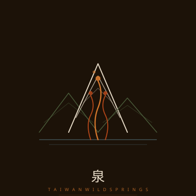

About This Collection
66 個溫泉
66 種抵達山的方式
每一個溫泉都不只是一組座標。穿過產業道路、涉過溪水、或者在登山口卸下裝備的那一刻——那才是真正的抵達。
這本手冊記錄的不只是難易度與交通指南，而是每一次「我真的把自己帶進山裡」的記憶。
— 小綠，野溪溫泉愛好者

走進真正的野溪溫泉——不是觀光客的池子，是只有山知道的地方。
每一個溫泉都不只是一組座標。穿過產業道路、涉過溪水、或者在登山口卸下裝備的那一刻——那才是真正的抵達。
這本手冊記錄的不只是難易度與交通指南，而是每一次「我真的把自己帶進山裡」的記憶。
— 小綠，野溪溫泉愛好者


「帶走的不只是疲憊，還有山的記憶。」
真正的溫泉在於山的靈魂，不在水溫。